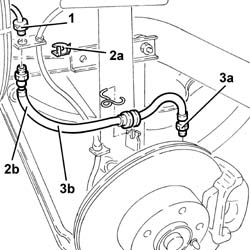
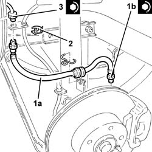

3330E30 FLEXIBLE PIPE (one), left or right, to rear brake calipers - R.R.
- Path
- Procedures > 33 BRAKING SYSTEM > 3330 HYDRAULIC BRAKING SYSTEM > 3330E hydraulic brake system pipes > 3330E30 FLEXIBLE PIPE (one), left or right, to rear brake calipers - R.R.
- Kind
- repair procedure (removal / refitting; the operation number is the code)
- Applies to
- all engines; all production periods
- Interactive page
- https://sloeber94.github.io/elrnDB-a147/en/#/3025242
Applies to: all engines; all production periods
 Removing
Removing
 Refitting
RefittingPosition the vehicle on the ramp.
Proceed with the removal 4450B11 WHEEL (one) rear - R.R. .
1. Undo the connector on the rear brake caliper flexible pipe, rigid pipe side.
2. Remove the stop (2a) and release the rear brake caliper flexible pipe (2b) from the mounting bracket.
3. Undo the connector (3a), brake caliper side, and remove the rear brake caliper flexible pipe (3b) after releasing it from the mounting bracket.

Applies to: all engines; all production periods
Refitting
Removing1. Refit the rear brake caliper flexible pipe (1a) in its seating and connect it to the brake caliper, tightening the connector (1b) to the specified torque.
 | Fastening | Component | Ø | Value (daNm) |
|---|---|---|---|---|
1b | Connector | HOSE TO REAR BRAKE CALIPER | M10 | (Brake caliper side) 1.3 ÷ 1.5 |
2. Fix the brake caliper flexible pipe to the mounting bracket using the fastening.
3. Tighten the connector on the rear brake caliper flexible pipe, rigid pipe side, to the specified torque.
| Fastening | Component | Ø | Value (daNm) |
|---|---|---|---|---|
3 | Connector | HOSE TO REAR BRAKE CALIPER | M10 | (Rigid pipe side) 1.3 ÷ 1.5 |

Applies to: all engines; all production periods
Bleed the air from the hydraulic braking system 3330A14 HYDRAULIC BRAKING SYSTEM - Bleed air .
Proceed with the refitting 4450B11 WHEEL (one) rear - R.R. .
Remove the car from the ramp.